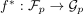
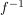
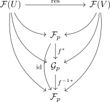

isomorphism of presheaves induces isomorphism of stalks
1. Proposition
Let  be a topological space and
be a topological space and  V-valued presheafs for a category
V-valued presheafs for a category  with stalks
with stalks  at a point
at a point  .
Suppose
.
Suppose  is a isomorphism of presheaves, then
is a isomorphism of presheaves, then  induces an isomorphism
induces an isomorphism

2. Proof
Follows from morphism of presheaves induces morphism on the stalks:
by Assumption, and

induce unique $f*, f-1^, such that the induced diagrams commute. Hence